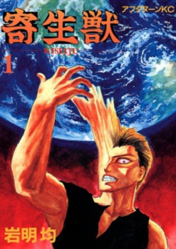
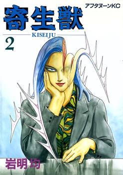
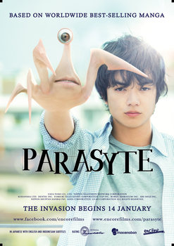
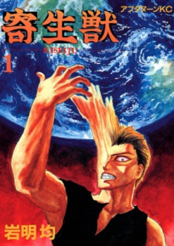
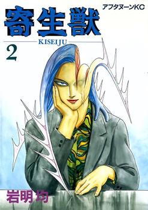
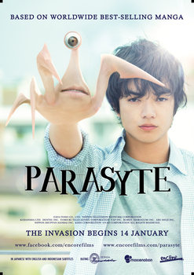

Anime
O anime de Kiseijuu foi televisionado de 9 de outubro de 2014 a 26 de março de 2015.
Adaptando todo o mangá, com um total de 24 episódios.
O estúdio responsável pela
animação foi a Madhouse (Death Note, Hunter x Hunter, No Game No Life , One Punch Man, etc.)
No Brasil, o anime está disponível nos
catálogos da Netflix e da Crunchyroll.
Mangá
O mangá de Kisseiju, já finalizado, foi publicado na revista japonesa
Afternoon, de 22 de Novembro de 1989 a 23 de Dezembro de 1995.
Escrito e ilustrado por
Hitoshi Iwaaki, o mangá possui um total de 64 capítulos divididos em 10 volumes.
No Brasil,
foi publicado pela JBC.
Filme
Kiseijuu não possui filmes animados, apenas
um filme Live Action, lançado no dia 29 de Novembro de 2014.